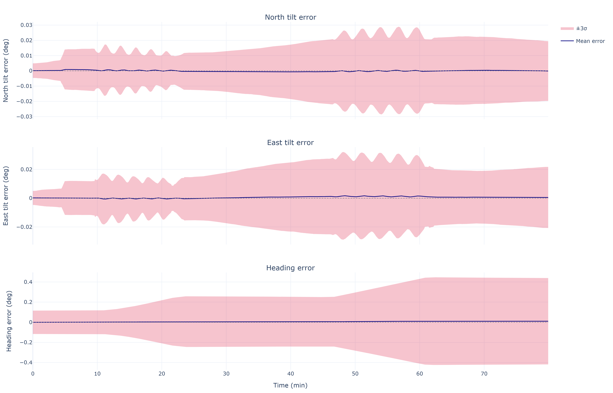

Frames & attitude¶
An inertial navigator keeps track of several reference frames at once. Its gyros and accelerometers measure motion relative to inertial space. It reports position relative to the rotating Earth, velocity along the local North, East and Down directions, and the vehicle's orientation relative to those same local directions. Converting between these frames is most of the bookkeeping in inertial navigation.
The most important conversion is the vehicle's attitude: the rotation between its own axes and the local North-East-Down axes. The navigator uses it to turn every accelerometer output into an acceleration along North, East and Down, so an attitude error becomes a navigation error. The GUI's Attitude Errors tab shows how far the computed attitude drifts from the truth.
Key results
- ins_sim uses five frames: inertial (i), Earth (e), local navigation (n, North-East-Down), body (b), and a local tangent plane at the start point (l) that is used only to draw tracks.
- The attitude \(\Cmat{b}{n}\) is built from heading, pitch and roll, in
that order, and stored as a scipy
Rotation. - The attitude error \(\delta\psivec{nb}{n}\) is a small rotation resolved in NED: a North tilt, an East tilt and a heading error. Unlike roll and pitch errors, its tilts do not depend on which way the vehicle points.
Physical picture¶
- The inertial frame (i) has its origin at the Earth's centre and axes that do not rotate relative to the distant stars. Gyros and accelerometers measure motion relative to it.
- The Earth frame (e) shares that origin and the polar axis, but turns with the Earth at \(\omega_{ie}\), 15.04 °/h. Its x axis points to 0° latitude, 0° longitude. A gyro at rest on the ground measures this rotation.
- The local navigation frame (n) sits at the vehicle, with axes North, East and Down. Down is along the normal to the WGS-84 ellipsoid, which does not pass through the Earth's centre (see Earth & gravity). As the vehicle moves, the frame turns with it so that it stays level and pointing north.
- The body frame (b) is fixed to the IMU, and the IMU to the vehicle (a strapdown installation): x forward, y along the right wing, z down.
- The local tangent plane (l) is NED at the start point, fixed to the Earth. ins_sim uses it only to draw tracks relative to the start.
The labels and roles of the frames are listed on Notation & conventions.
Continuous-time model¶
Euler angles and the attitude matrix¶
The attitude \(\Cmat{b}{n}\) resolves a vector given along the body axes into its North, East and Down components; for example \(\fvec{ib}{n} = \Cmat{b}{n}\,\fvec{ib}{b}\). It is built from three Euler angles: turn through the heading \(\psi_{nb}\) about Down, then through the pitch \(\theta_{nb}\) about the new y axis, then through the roll \(\phi_{nb}\) about the new x axis:
where:
- \(\phi\), \(\theta\) and \(\psi\) are short for the roll \(\phi_{nb}\), pitch \(\theta_{nb}\) and heading \(\psi_{nb}\) of the body relative to NED [rad].
Going the other way, with \(C_{ij}\) the element in row \(i\), column \(j\):
At a pitch of ±90° roll and heading become indistinguishable. This singularity is one reason the simulator stores attitude as a rotation, not as angles.
Quaternions and rotation vectors¶
The same attitude can be written as a quaternion, four numbers instead of nine:
where \(\alpha\) is the angle [rad] and \(\mathbf{u}\) the unit axis of the single rotation that takes the NED axes onto the body axes. The code stores the scalar part last; see the quaternion warning on the Notation page.
A rotation vector \(\boldsymbol{\rho}\) points along the rotation axis and has the rotation angle \(\rho = |\boldsymbol{\rho}|\) as its length. Its transformation matrix is the matrix exponential of its skew-symmetric matrix, given in closed form by Rodrigues' formula:
Rotation vectors are how the navigator applies each step's small change of attitude, and how attitude errors are measured.
Attitude kinematics¶
The attitude changes as the body rotates, and also as the NED frame itself rotates:
where:
- \(\Wmat{ib}{b} = \skew{\wvec{ib}{b}}\) holds the angular rate of the body relative to inertial space, which the gyros measure [rad/s];
- \(\wvec{in}{n} = \wvec{ie}{n} + \wvec{en}{n}\) is the angular rate of the NED frame: Earth rate plus transport rate (see Earth & gravity) [rad/s];
- \(\wvec{nb}{b}\) is the angular rate of the body relative to NED, the rate at which roll, pitch and heading actually change [rad/s].
A gyro at rest measures only the Earth's rotation. The second term removes exactly that, so a stationary vehicle's attitude stays constant.
Attitude error¶
The computed attitude \(\Cmat[\hat]{b}{n}\) differs from the truth by a small rotation, the attitude error \(\delta\psivec{nb}{n}\), resolved in NED:
Its components are the North tilt, the East tilt and the heading error. To first order they relate to errors in the Euler angles by
where:
- \(\delta\phi_{nb}\), \(\delta\theta_{nb}\) and \(\delta\psi_{nb}\) are the errors in roll, pitch and heading [rad].
Flying north and level, a roll error is a North tilt and a pitch error an East tilt; flying east, they swap. The tilts that drive the navigation errors are the geographic ones (see INS error model), so the GUI plots \(\delta\psivec{nb}{n}\) rather than Euler-angle errors.
As implemented¶
Euler angles to attitude. The truth trajectory builds its attitude from its Euler angles with scipy, heading first:
where \(\mathbf{R}_z\), \(\mathbf{R}_y\) and \(\mathbf{R}_x\) are rotations about the z, y and x axes.
self.C_b_n = Rot.from_euler(
'ZYX', np.column_stack([euler_nb[:, 2], euler_nb[:, 1], euler_nb[:, 0]]))
Attitude error. The error is the rotation vector of the computed attitude composed with the inverse of the true one:
return (est_C_b_n * C_b_n.inv()).as_rotvec()
Position relative to the start point. To draw tracks, the navigator and the truth convert the curvilinear position into metres from the start point, using the radii of curvature there:
where the subscript 0 marks values at the start point.
r_lb_l[k+1, 0] = (L_b[k+1] - L_b0) * (R_N0 + h_b0)
r_lb_l[k+1, 1] = (lambda_b[k+1] - lambda_b[0]) * (R_E0 + h_b0) * np.cos(L_b0)
r_lb_l[k+1, 2] = -(h_b[k+1] - h_b0)
Compared with Groves (2013)
The Euler-angle sequence, the attitude kinematics and the definition of the attitude error, an error rotation applied to the true attitude and resolved in NED, follow Groves' conventions1. Groves writes the quaternion scalar-first; scipy stores it scalar-last.
What it looks like¶

The Attitude Errors tab for 50 trials of the packaged mission with the navigation-grade IMU spec. The North and East tilts stay within a few hundredths of a degree throughout, rippling in the turns: the Schuler loop bounds them (see INS error model). The heading error starts at the spread of the initial alignment, 0.04° (1σ), and steps up during the two loiters. There the gyros' axis misalignments act on large turn rates; with the misalignments switched off, the heading error stays at 0.04°. Nothing bounds the heading error of a free-inertial navigator.
The Validation page checks that the attitude error at the first sample equals the alignment error each trial draws.
Assumptions & limitations¶
Assumptions & limitations
- The inertial and Earth frames share the polar axis. Precession, nutation and polar motion are ignored; over a flight they are negligible.
- Euler angles are singular at a pitch of ±90°. ins_sim integrates and stores attitude as rotations, so only the truth construction uses Euler angles, and aircraft missions stay far from ±90°.
- The NED frame is undefined at the poles, where there is no North. Missions must keep clear of them.
- \(\rvec{lb}{l}\) is a linearized drawing aid, not an exact tangent-plane position. Error statistics use the position error at the true position instead (see Monte Carlo evaluation).
In the code¶
| Quantity | Equation | Implemented in |
|---|---|---|
| Attitude from Euler angles | \(\Cmat{b}{n}(\phi_{nb}, \theta_{nb}, \psi_{nb})\) | TruthTrajectory, with scipy's Rotation.from_euler("ZYX", ...) |
| Euler angles from attitude | \(\operatorname{atan2}\) forms above | run_monte_carlo, with Rotation.as_euler("ZYX") |
| Attitude kinematics | \(\Cmat[\dot]{b}{n} = \Cmat{b}{n}\Wmat{nb}{b}\) | strapdown_navgrade; see Strapdown mechanization |
| Attitude error | \(\delta\psivec{nb}{n}\) | attitude_error |
| Position relative to the start | \(\rvec{lb}{l}\) | strapdown_navgrade, TruthTrajectory |
This example writes one attitude three ways, then measures a 0.1° pitch error as an attitude error vector. At a heading of 30° it splits between the North and East tilts as the matrix above predicts:
"""One attitude written three ways, and an attitude error resolved in NED."""
import numpy as np
from scipy.spatial.transform import Rotation
from ins_sim.evaluation.errors import attitude_error
np.set_printoptions(precision=4, suppress=True, floatmode="fixed")
# Heading 30°, pitch 5°, roll 10°. C_b^n turns through the heading about
# Down, then the pitch about the new y axis, then the roll about the new x axis.
C_b_n = Rotation.from_euler("ZYX", [30.0, 5.0, 10.0], degrees=True)
print("C_b^n =")
print(C_b_n.as_matrix())
print("q_b^n, stored scalar-last [x, y, z, w]:", C_b_n.as_quat())
# C_b^n resolves a vector given in body axes along North, East and Down:
# here the body x axis, the direction the nose points.
print("Nose direction in NED:", C_b_n.apply([1.0, 0.0, 0.0]))
# A 0.1° pitch error. At a heading of 30° the attitude error vector
# delta_psi_nb^n splits it between the North and East tilts.
est_C_b_n = Rotation.from_euler("ZYX", [30.0, 5.1, 10.0], degrees=True)
delta_psi_nb_n = attitude_error(est_C_b_n, C_b_n)
print("delta_psi_nb^n [deg]:", np.rad2deg(delta_psi_nb_n).round(4) + 0.0)
C_b^n =
[[ 0.8627 -0.4793 0.1612]
[ 0.4981 0.8604 -0.1075]
[-0.0872 0.1730 0.9811]]
q_b^n, stored scalar-last [x, y, z, w]: [0.0729 0.0645 0.2539 0.9623]
Nose direction in NED: [ 0.8627 0.4981 -0.0872]
delta_psi_nb^n [deg]: [-0.0500 0.0866 0.0000]
References¶
-
Groves (2013), Chapter 2: coordinate frames, attitude representations and kinematics. ↩